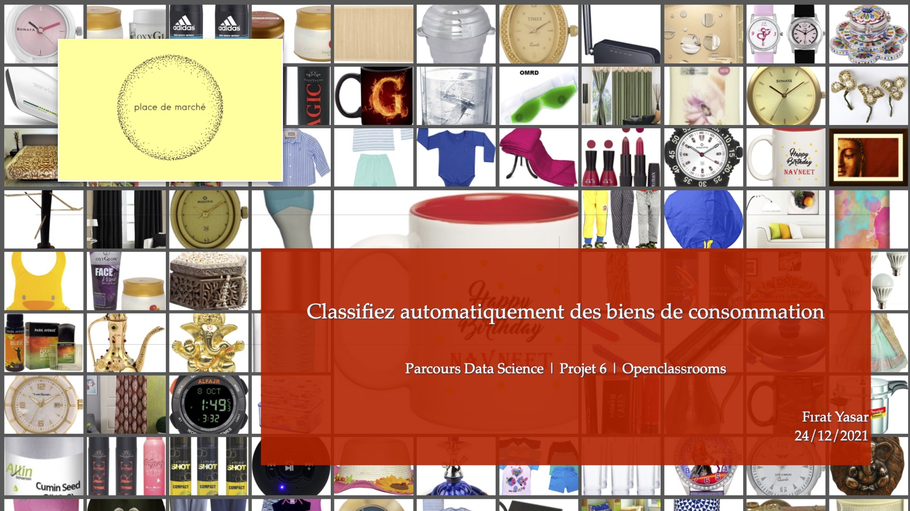
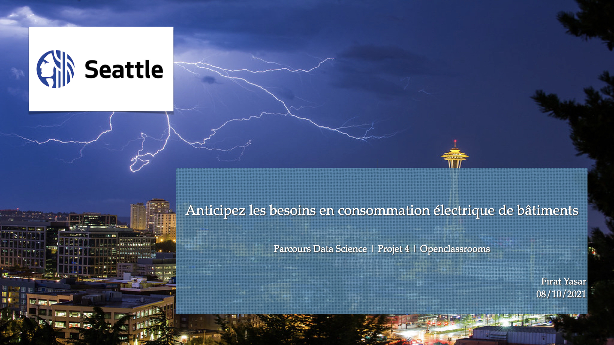
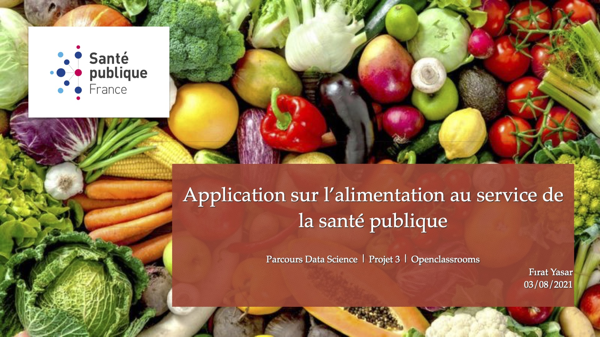
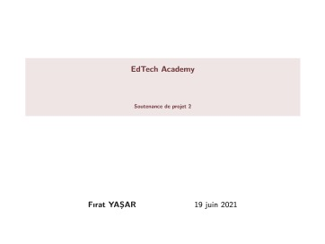

Project 6
A project on the classification of categories of products based on images and texts
This is a data science project which uses tools of machine learning (both non-supervised and supervised) as well as those of deep learning.
Click on PDF button for the presentation of the project
Project slides are in French

PDF
Project 5
A project on the classification of the different types of clients of an enterprise
This is a data science project which uses tools of machine learning (non-supervised).
Click on PDF button for the presentation of the project
Project slides are in French
PDF
Project 4
A project on the carbon emissons in Seattle
This is a data science project which uses tools of machine learning (supervised).
Click on PDF button for the presentation of the project
Project slides are in French

PDF
Project 3
A project on nutritional grading of foods and beverages
This is a data science project which uses tools of machine learning.
Click on PDF button for the presentation of the project

PDF
Project 2
Analysez des données de systèmes éducatifs
This is a data science project which uses basic tools of data science. Click on PDF button for the presentation of the project

PDF
Data Science News
Stanford scientists combine satellite data, machine learning to map poverty
Benefits & risks of Artificial Intelligence